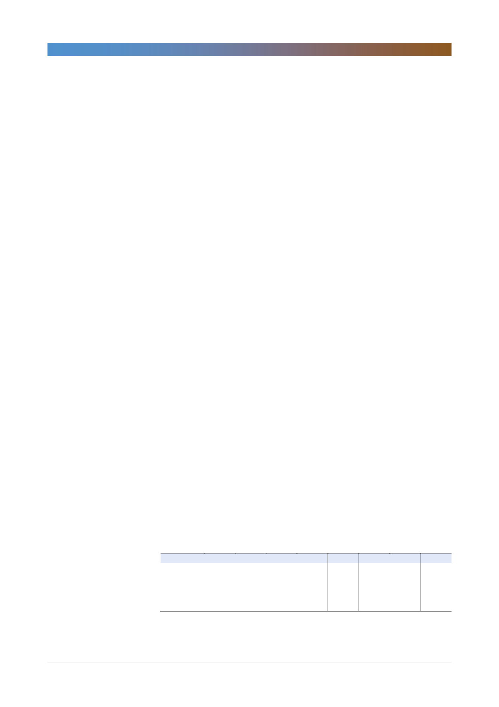

삼성화재(000810)
[지급여력비율 & 자본규제]
- RBC비율 하락 요인(총 39%)
- 요구자본 증가: K-ICS 도입에 앞서 올해부터 퇴직계정 신용시장리스크 반
영에 따른 영향 5%
- 가용자본 감소: 법인세율 인상(24.2%에서 25.4%) 효과 3%; 금리인상(국
고채 10년물 금리 작년 연말 2.2%에서 올 6월 2.7%로 상승) 효과 15%;
관계사 지분 하락에 따른 평가이익 감소 효과 5%; 연말 주주배당 초과 효과
11%
- RBC 관련 변화는 두 가지. 1) 퇴직계정 신용리스크(2018년 6월 35%,
2019년 6월 70%, 2020년 6월 100%로 순차적 반영)과 2) 금리리스 강화
- 현재 RBC비율 323%에서 35%p 하락 예상(신용리스크 효과 8%, 금리리스
크 효과 27%)
[자산운용]
- 채권 롤오버 기간 5년으로, 타사에 비해 해외유가증권에 대한 부담 적음
- 환 프리미엄 악화 문제는 달러화 채권(프리미엄 -200bp). 해외자산 증가는
환 프리미엄이+100bp 정도 되는 코로나/유로 채권
- 비달러 자산의 현재 비중은 30%. 향후 추가적으로 확대할 계획. 분산된 통
화관리(이중통화) 실시 예정
대체투자
- 정부 규제가 심한 가계대출은 물량 확대 어려워 기업금융 쪽으로 대체투자
자산 확대. 시장 규모가 작은 국내시장보다는 해외서 대체투자자산 늘릴 예
정
- 직접대출 시에는 환헤지 채권과 같은 전략. 그러나 대부분은 펀드 등을 통해
간접투자를 해서 운용사의 투자구조에 따른 영향 받을 수 밖에 없음
- (지분형 대체투자)신지급여력제도는 지분 투자에 대해 높은 계수 적용. 자산
운용본부와 RM팀과 협의 하에 대출과 연계해 투자. 삼성화재는 다른 회사
에 비해 재무건전성 우량하고, 투자 시 지급여력제도 하 감내 가능한 수준에
서 수익률 올릴 수 있는 방법이라고 생각됨
- 배당형자산 투자 확대로 전체 포트폴리오 수익성 높일 것(자산운용수익률
1~2bp 상승 목표)
<표 1> 2분기 실적 및 컨센서스
경과보험료
보험영업이익
합산비율(%)
투자영업이익
당기순이익
2Q17
4,435
(26)
100.6
397
277
주: 당기순이익은 지배주주순이익
자료: 삼성화재, 한국투자증권
3Q17
4,473
(132)
103.0
426
225
4Q17
4,373
(272)
106.2
445
38
1Q18
4,394
(81)
101.8
513
301
2Q18P
4,402
(135)
103.1
648
365
QoQ(%)
0.2
NM
1.2
26.4
21.1
(단위: 십억원)
YoY(%)
(0.8)
NM
2.5
63.4
31.7
컨센서스
4,472
(87)
595
376
3